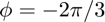

eul2mat_321
3-2-1 Euler angles (yaw, pitch, and roll) to rotation matrix.
Contents
Syntax
R = eul2mat_321(psi,theta,phi)
Description
R = eul2mat_321(psi,theta,phi) finds the rotation matrix corresponding to the specified 3-2-1 Euler angles (yaw, pitch, and roll).
Inputs
| Variable | Symbol | Description | Format | Units |
| psi | yaw angle (1st rotation, about 3rd axis) | 1×1 double |
rad | |
| theta | pitch angle (2nd rotation, about 2nd axis) | 1×1 double |
rad | |
| phi | roll angle (3rd rotation, about 1st axis) | 1×1 double |
rad |
Outputs
| Variable | Symbol | Description | Format | Units |
| R | rotation matrix | 3×3 double |
- |
Example
Find the rotation matrix corresponding to the 3-2-1 Euler angles , , and .
Defining the 3-2-1 Euler angles,
psi = pi/3; theta = -pi/6; phi = -2*pi/3;
Computing the rotation matrix,
R = eul2mat_321(psi,theta,phi)
R =
0.4330 0.7500 0.5000
0.6495 0.1250 -0.7500
-0.6250 0.6495 -0.4330
See also
axang2eul_321 | axang2mat | axang2quat | eul2axang_321 | eul2quat_321 | mat2axang | mat2eul_321 | mat2quat | quat2axang | quat2eul_321 | quat2mat